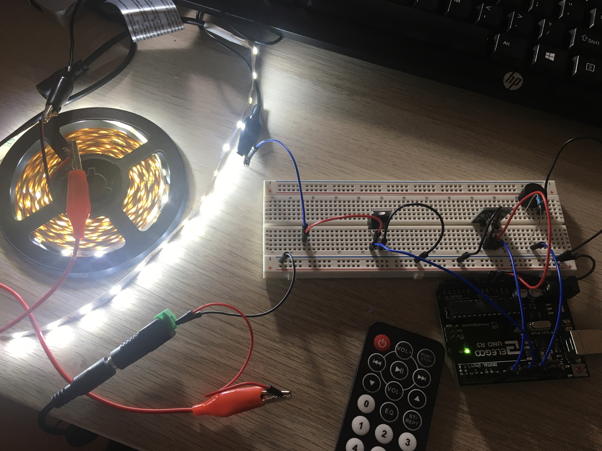
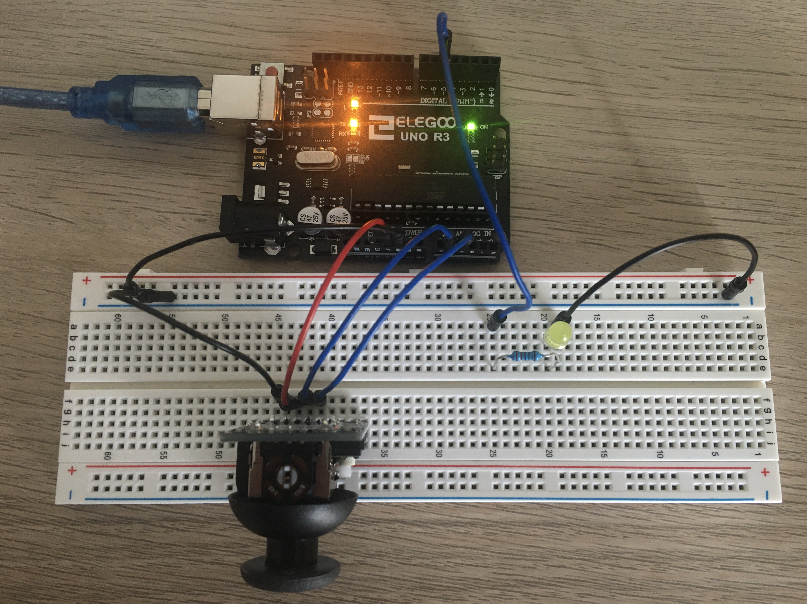

Assignment 1: Blink!
Assignment 1 about creating a circuit with at least 3 LEDs capable of blinking independently.
Assignment 2: Fade!
Assignment 2 was about creating a circuit with LEDs and a button using digital and analog capabilities!
Assignment 3: Input Output!

Assignment 3 was about creating a circuit with a sensor in a voltage divider to then use both hardware and software to change an LED.
Assignment 4: High(er) voltage and transistors!
Assignment 4 was about using a transistor to separately control load power from logic power.
Assignment 5 + 6: Talking to the web and the web talks back!
To save time to work on the final project, I combined Assignment 5 and 6 together. Together, they were about using p5.js to create interaction between an Arduino and a webpage.